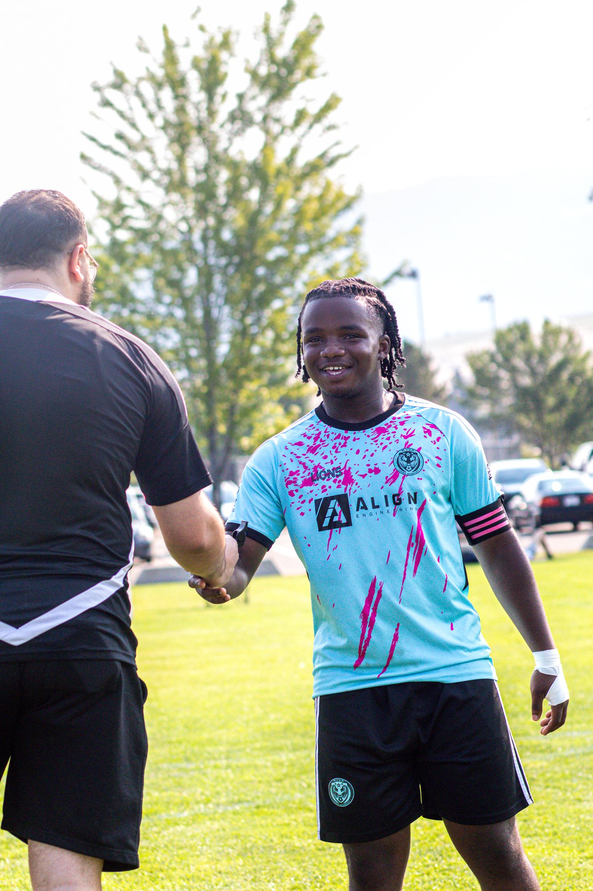

About KB Media
A photographer who plays the game too
KB Media is based in Vernon, BC and shoots sports, portraits and events across the Okanagan. I play in the Vernon and Kelowna men's soccer leagues, so I know where the moments happen and how fast they go.
From matchday action and team photos to portraits and community events, the goal is the same: real moments, edited cleanly and delivered fast. At tournaments and matchdays I can also print your favourite shots on the spot, so players and families take them home the same day.
Services
Matchday Coverage
Full-game action for soccer, baseball and softball. Individual players or the whole team, edited and delivered online.
Team & Club Picture Day
Team photos and individual player portraits for leagues, clubs and school teams, organised so the day runs quickly.
On-Site Print Booth
Prints made at the field or venue during tournaments and events, ready to take home before the final whistle.
Portraits
Athlete, lifestyle and seasonal portraits around the Okanagan, from lakeside spots to the orchard.
Events
Church services, community nights and celebrations, captured quietly and naturally.
Real Estate
Bright, wide interior and exterior photos for listings and rentals.
How It Works
Send a request
Fill in the booking form with your date, location and what you need.
Confirm the plan
KB Media replies within 24 hours to confirm availability and the details.
Shoot day
Show up and play. Prints are available on-site if you've booked the print booth.
Get your photos
Edited, high-resolution photos delivered online.
Questions
How fast do I get my photos?
Edited, high-resolution photos are delivered online within 24 to 48 hours of the game or session.
Where do you shoot?
Vernon, Kelowna and across the Okanagan Valley. Indoor and outdoor fields, gyms, diamonds and venues.
How do the on-site prints work?
I bring a portable printer to the game or event and print selected shots on the spot, so players and families take them home the same day. Add the print booth when you book.
Can players or parents buy photos on their own?
Yes. A team can book the whole game, or players can ask for their own photos from a game I'm covering. Mention it in your request.
How do I book?
Send a request on the booking page with your date, location and what you need. I reply within 24 hours to confirm.
Contact
Email kbmedia.ca@gmail.com or message @kbmedia.ca on Instagram.
Based in Vernon, BC. Shooting across Kelowna and the Okanagan Valley.